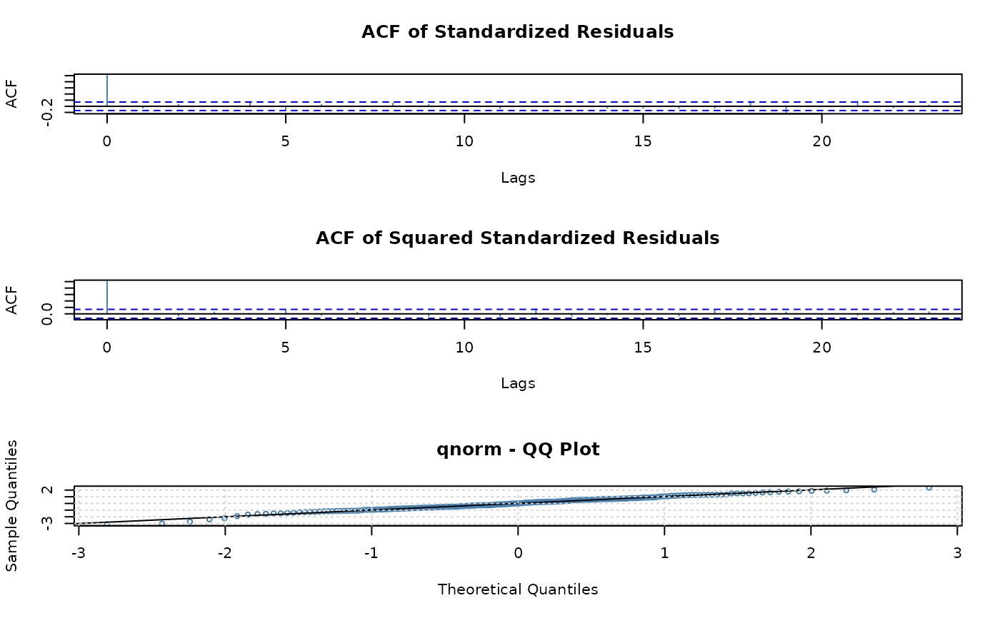
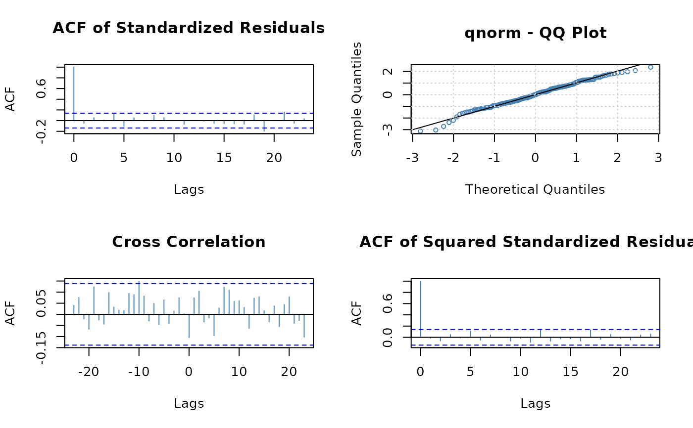

Diagnostic plots and statistics for fitted GARCH models
stats-tsdiag.RdProduce diagnostics for fitted GARCH/APARCH models. The method offers several tests, plots of autocorrelations and partial autocorrelations of the standardised conditional residuals, ability to control which graphs are produced (including interactively), as well as their layout.
Usage
# S3 method for fGARCH
tsdiag(object, gof.lag = NULL, ask = FALSE, ..., plot = c(4L, 5L, 7L),
layout = NULL)Arguments
- object
an object from class
"fGARCH", as returned bygarchFit.- gof.lag
maximal lag for portmanteau tests.
- ask
if
TRUEpresent a menu of available plots, see Details.- ...
not used.
- plot
if
TRUEall available plots; a vector of positive integers specifies a subset of the available plots.- layout
a list with arguments for
graphics::layoutfor the plots. The default plots the autocorrelations of the standardised conditional residuals and their squares, as well as a QQ-plot for the fitted conditional distribution.
Details
Compute and graph diagnostics for fitted ARMA-GARCH/APARCH models.
plot can be TRUE to ask for all plots or a vector of
positive integers specifying which plots to consider. Currently the
following options are available:
| 1 | Residuals |
| 2 | Conditional SDs |
| 3 | Standardized Residuals |
| 4 | ACF of Standardized Residuals |
| 5 | ACF of Squared Standardized Residuals |
| 6 | Cross Correlation between r^2 and r |
| 7 | QQ-Plot of Standardized Residuals |
plot is
TRUE, you probably need also ask = TRUE.
If argument plot is of length two the graphics window is split
into 2 equal subwindows. Argument layout can still be used to
change this. If argument plot is of length one the graphics
window is not split at all.
In interactive sessions, if the number of requested graphs (as
specified by argument plot) is larger than the number of graphs
specified by the layout (by default 3), the function makes the first
graph and then presents a menu of the requested plots.
Argument layout can be used to change the layout of the plot,
for example to put two graphs per plot, see the examples. Currently it
should be a list of arguments for layout, see ?layout.
Don't call layout youself, as that will change the graphics
device prematurely.
The computed results are returned (invisibly). This is another
difference from stats::tsdiag which doesn't return them.
Value
(experimental, may change) a list with components:
- residuals
standardised conditional residuals,
- gof
-
goodness-of-fit tests, pretending parameters are known,
- gof_composite
-
goodness-of-fit tests taking into account that the parameters are estimated.
Only components that are actually computed are included, the rest are NULL or absent.
Examples
set.seed(20230612)
x <- garchSim(n = 200)
fit <- garchFit(formula = ~ garch(1, 1), data = x, trace = FALSE)
fit_test <- tsdiag(fit)

fit_test
#>
#> gof:
#> statistic p.value
#> Anderson-Darling 3.1812694 0.2750755
#> Cramer-vonMises 0.6032679 0.2521133
#>
#> gof_composite:
#> statistic p.value
#> Anderson-Darling 0.38205009 0.8661955
#> Cramer-vonMises 0.04694483 0.8950729
## 2x2 matrix with acf of r, r^2 on diag, cor(r,r^2) below it, and qq-plot
tsdiag(fit, plot = c(4, 6, 7, 5), layout = list(matrix(1:4, nrow = 2)))
